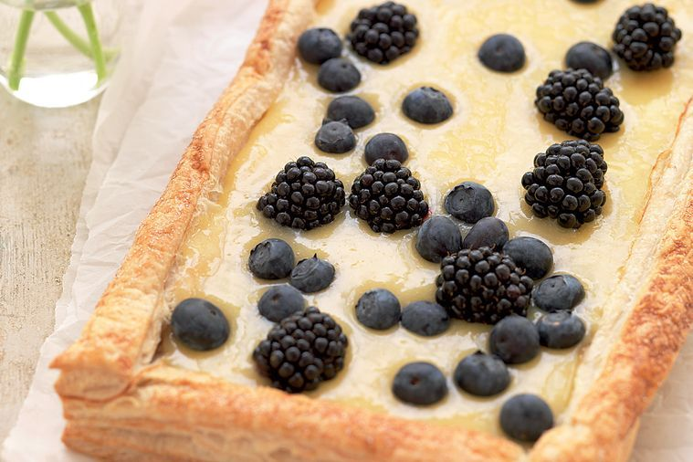

Lemon Curd Tart

"Lemony zest and tangy berries make for a deliciously light dessert that's
perfect year-round."
INGREDIENTS
- 1 tbs finely grated lemon zest
- 110g caster sugar
- 1 tbs cornflour
- 2 eggs, lightly beaten
- 3 egg yolks
- 50g unsalted butter
- 375g block frozen puff pastry
- 185ml lemon juice
- Blueberries, to serve
- Blackberries, to serve
- Creme fraiche, to serve
METHOD
-
Preheat the oven to 180°C. Line a baking tray with baking paper.
-
Place the lemon zest and juice, sugar, cornflour, beaten eggs and 2
egg yolks in a saucepan over medium heat. Cook, whisking constantly,
for 10 minutes or until smooth and thick. Remove from the heat and
whisk in the butter. Leave to cool.
-
Meanwhile, lightly flour a work surface and roll out the pastry to a
24cm x 34cm rectangle. Trim a 2cm-strip from each side of the pastry
sheet (leaving a 20cm x 30cm rectangle) reserving the strips.
-
Brush the pastry sheet and strips with the remaining egg yolk. Arrange
strips around the edge of the pastry sheet, trimming the edges to form
a neat frame. Prick pastry sheet with a fork and sprinkle lightly with
sugar. Transfer to the lined tray and bake for 15-20 minutes until
golden.
-
Leave to cool, then press down the centre of the pastry and fill the
shell with the lemon curd. Serve topped with berries and creme
fraiche.